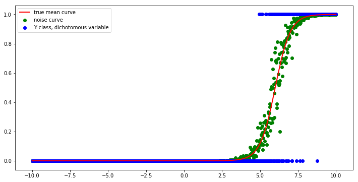
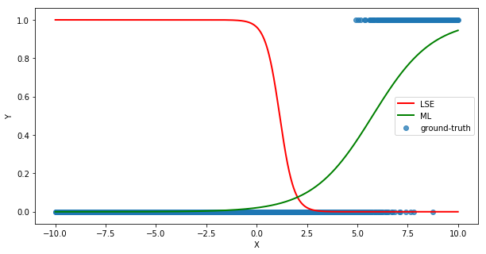
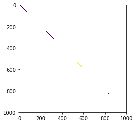
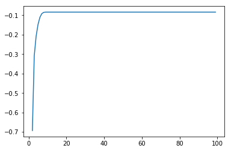
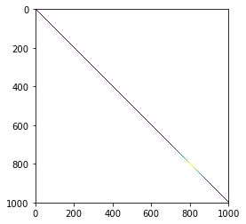
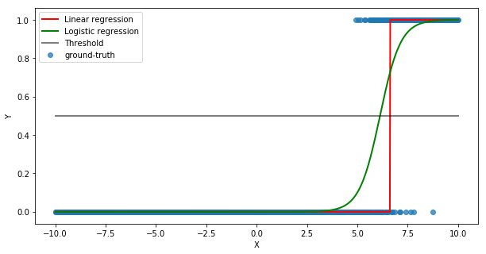
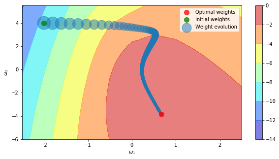
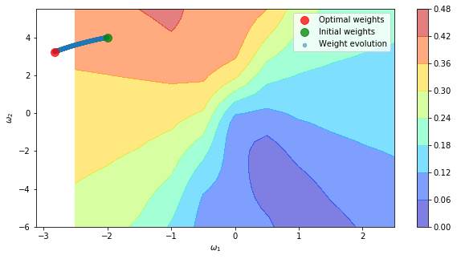
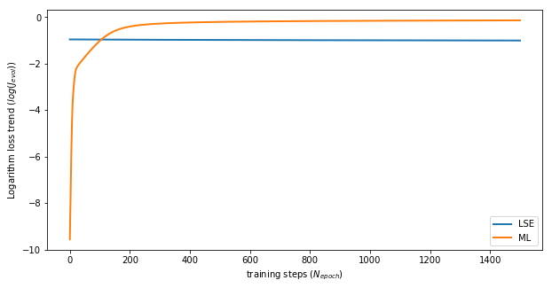

1. Introduction and assumptions
In this post-series, we are going to study the very basic modelling for classification problems, the logistic regression. Classification entails that the output is a discrete variable taking values on a pre-defined limited set, where the set dimension is the number of classes. Some examples are spam detection, object recognition and topic identification.
In this post, we implement the logistic regression theory that we have analyzed in the first post using Python and Numpy from scratch. We then implement a different method, Iteratively reweighted least squares (IRLS), to identify the coefficients of a binary logistic regression classifier. We also compare linear and logistic regression algorithms on the same problem. We finally analyze how the model parameters evolve during the training process.
In this series, we do not split the dataset into training and testing sets, but we assess every model on the training set only. A dedicated post on model selection, overfitting/underfitting problem and regularization will be published soon.
2. Data generation
We create an equispaced x grid with 1000 points ranging from -10 to 10.
Then true y outcome, which represents the class to assign to the input, is defined via the logistic function of the linear transformation of input x with parameters Wgt (2, -12).
The actual class is assigned by drawing samples from a binomial distribution.
A binomial distribution becomes a Bernoulli distribution when the number of trials is 1.
In other words, we generate data by sampling the y class for each input x, where the probability of success (i.e., of belonging to class 1) is given by:
$$ p = \sigma(\lbrack x, 1\rbrack\cdot \omega) $$
The logistic function is the $\sigma$ operator in the equation.
def logistic(XX, ww, noise=0):
tt = np.dot(XX, ww) + noise
return 1/(1 + np.exp(-tt))
xx = np.linspace(-10., 10, 1000)
bb = np.ones_like(xx)
XX = np.vstack([xx, bb]).T # Add intercept
Wgt = np.array([2, -12]).reshape(-1, 1) # ground-truth parameters
Ymean = logistic(XX, Wgt) # True mean
Ynoise = logistic(XX, Wgt, noise=np.random.normal(scale=0.5, size=(len(xx), 1))) # noise
Yclass = np.random.binomial(1., Ynoise) # dichotomous variable, n_trial=1 => Bernoulli distribution
The figure shows the y class of each input in blue, the noise probability of success in green and the true mean with a solid red line.
plt.figure(figsize=(12,6))
plt.plot(xx, Ymean, 'r-', lw=2, label='true mean curve')
plt.scatter(xx, Ynoise, c='g', label='noise curve')
plt.scatter(xx, Yclass, c='b', label='Y-class, dichotomous variable')
plt.legend();

3. Training
At this stage, we apply the gradient descent algorithm to evolve the initial parameter setting to optimize the loss function down to its minimum value. We want to compare the two final outcomes that we get from minimizing the Maximum-Likelihood (ML) and Least-Squared-Error (LSE) functions.
wInit = np.array([-2, 4]).reshape(-1, 1)
J = lossFunML(XX, Yclass, wInit)
Nepoch, lr = 1500, 0.05
wEvolML, JevolML = gradDescML(XX, Yclass, wInit, lr, Nepoch)
wOptML, Jopt = wEvolML[-1:,:], JevolML[-1]
print("Optimal ML parameter values: {}, Optimal ML loss value: {}".format(wOptML, Jopt))
[[ 0.6702804 -3.85882638]] [-0.13505221]
wEvolLSE, JevolLSE = gradDescLSE(XX, Yclass, wInit, lr, Nepoch)
wOptLSE, Jopt = wEvolLSE[-1:,:], JevolLSE[-1]
print("Optimal LSE parameter values: {}, Optimal LSE loss value: {}".format(wOptLSE, Jopt))
[[-2.82634014 3.23804035]] [ 0.36677638]
The figure shows the ground-truth class of each input in blue, the model probability of success (being in state 1) predicted by ML and LSE methods with solid green and red lines, respectively.
plt.figure(figsize=(10, 5))
plt.scatter(xx, Yclass, alpha=0.75, label='ground-truth')
plt.plot(xx, sigmoid(np.dot(XX, wOptLSE.T)[:,0]), 'r', lw=2, label='LSE')
plt.plot(xx, sigmoid(np.dot(XX, wOptML.T)[:,0]), 'g', lw=2, label='ML')
plt.xlabel("X")
plt.ylabel("Y")
plt.legend()
plt.show()

4. Iteratively reweighted least squares (IRLS)
A different method to identify the coefficients of a binary logistic regression classifier is to use iteratively reweighted least squares (IRLS), which is equivalent to minimizing the log-likelihood of a Bernoulli distributed process using Newton’s method (see Wiki reference for further details).
The parameters $\omega_k$ at step $k$ are updated as follows:
$$\omega_{k+1} = (X^T\cdot S_k\cdot X)^{-1}\cdot X^T\cdot (S_k\cdot X \cdot\omega_k + Y - \hat{Y}) $$
where $X$ contains as many rows as examples and columns as the model parameters (i.e., the number of predictors plus the bias), $S_k$ is a diagonal matrix of Bernoulli variance of the model prediction $\hat{Y}\cdot(1-\hat{Y})$, $Y$ contains the ground-truth labels, $\hat{Y}$ is the current model prediction for each example of the dataset.
The matrix inverse operation is implemented using the pinv method in the linalg package to better handle critical situations such as singular matrices.
Here we show the shape of each of the involved matrices.
ww = np.array([-1, 1]).reshape(-1, 1)
Yhat = sigmoid(np.dot(XX, ww))
Sk = np.diag(Yhat[:,0]*(1-Yhat[:,0]))
T3 = (np.dot(Sk, np.dot(XX, ww)) + Yclass - Yhat)
T1 = np.linalg.pinv(np.dot(XX.T, np.dot(Sk, XX)))
wNew = np.dot(T1, np.dot(XX.T, T3))
XX.shape, Yclass.shape, Yhat.shape, ww.shape, wNew.shape
((1000, 2), (1000, 1), (1000, 1), (2, 1), (2, 1))
Here we plot the initial prediction variance matrix $S_k$, where 0 values have been replaced with NaN to improve readability.
Sk_vis = Sk
Sk_vis[Sk_vis==0] = np.nan
plt.imshow(Sk_vis);
<matplotlib.image.AxesImage at 0x2102d466080>

def irls(XX, YY, ww):
Yhat = sigmoid(np.dot(XX, ww))
Sk = np.diag(Yhat[:,0]*(1-Yhat[:,0]))
T3 = (np.dot(Sk, np.dot(XX, ww)) + YY - Yhat)
T1 = np.linalg.pinv(np.dot(XX.T, np.dot(Sk, XX)))
ww = np.dot(T1, np.dot(XX.T, T3))
return ww, Sk
ww = np.array([-1, 1]).reshape(-1, 1)
Jevol, wevol = [], []
ww = np.array([-1, 1]).reshape(-1, 1)
Nepoch = 100
for _ in range(Nepoch):
ww, Sk = irls(XX, Yclass, ww)
Jevol.append(lossFunML(XX, Yclass, ww))
wevol.append(ww[:,0])
wEvolIRLS, JevolIRLS = np.array(wevol), np.array(Jevol)
plt.plot(Jevol);
[<matplotlib.lines.Line2D at 0x2102e7672e8>]

Sk_vis = Sk
Sk_vis[Sk_vis==0] = np.nan
plt.imshow(Sk_vis);
<matplotlib.image.AxesImage at 0x2102f884128>

5. Linear vs. logistic regression
Since we stated that linear regression would fail to handle classification problems, we want to get an idea of how it fails and struggles with this simple toy task.
To this end, we use the two modules from the linear model package of Scikit-Learn to create the linear and logistic regression models.
Since the output of the linear regression model is continuous in the real domain, we convert it to boolean (0/1) with a simple $ \geq 0.5$ condition.
from sklearn.linear_model import LinearRegression, LogisticRegression
lnr = LinearRegression()
lnr.fit(XX, Yclass)
yprobLNR = lnr.predict(XX)
ypredLNR = (yprobLNR>.5).astype(int)
print("The linear regression model accuracy is {}".format(np.sum(ypredLNR == Yclass)/len(Yclass)*100))
95.700000000000003
lgs = LogisticRegression(C=1e5)
lgs.fit(XX, Yclass[:,0])
ypredLGS = lgs.predict(XX).reshape(-1, 1)
yprobLGS = lgs.predict_proba(XX)[:,1].reshape(-1, 1)
print("The logistic regression model accuracy is {}".format(np.sum(ypredLGS == Yclass)/len(Yclass)*100))
96.399999999999991
The figure compares the ground-truth class of each input in blue, the linear and logistic regression model predicted the probability of success (being in state 1) in red and green, respectively, and the linear regression model predicted class in yellow.
plt.figure(figsize=(10, 5))
plt.scatter(xx, Yclass, alpha=0.75, label='ground-truth')
plt.plot(xx, yprobLNR[:,0], 'y', lw=2, label='Linear regression - probability')
plt.plot(xx, ypredLNR[:,0], 'r', lw=2, label='Linear regression - class')
plt.plot(xx, yprobLGS[:,0], 'g', lw=2, label='Logistic regression - probability')
plt.plot([xx.min(), xx.max()], [0.5, 0.5], 'k', lw=2, label='Threshold', alpha=.5)
plt.xlabel("X")
plt.ylabel("Y")
plt.legend();

6. Parameter evolution
We want to see how the model parameters evolve within the loss function domain. To this end, we calculate the loss function value for each combination of parameters $\omega_1$ and $\omega_2$ and we keep track of the parameter values for all the training epochs the gradient descent algorithm requires to converge to the optimal solution.
step = 0.5
w1s = np.arange(-2.5, 3, step)
w2s = np.arange(-6, 6, step)
w1mg, w2mg = np.meshgrid(w1s, w2s)
wmg = np.vstack((w1mg.flatten(), w2mg.flatten())).T
w1s.shape, w2s.shape, wmg.shape
((11,), (24,), (264, 2))
w_ = np.array([-3, 5]).reshape(-1, 1)
[w_, lossFunML(XX, Yclass, w_)]
[array([[-3],
[ 5]]), array([-13.90418806])]
The figure shows the contour plot of the loss function in the domain $(\omega_1, \omega_2) \in (-6,6)\times(-2.5, 3)$. The higher the value, the hotter the colours, the lower the loss function, the better the model is. Recall that the loss function is something we want to minimize by definition, while we want to maximize the likelihood of the data. It is good practice to take the maximum likelihood definition with a negative sign as the loss function. A pair of parameter values is a dot, whose size is related to the loss function. The smaller the dot, the better it is. Initial and final (and hopefully optimal) weights are plotted in green and red.
Jlist = [lossFunML(XX, Yclass, wmg[kk,:].reshape(-1, 1)) for kk in range(wmg.shape[0])]
Jmap = np.array(Jlist).reshape(-1, w1s.shape[0])
plt.figure(figsize=(10, 5))
plt.contourf(w1mg, w2mg, Jmap, alpha=0.5, cmap=plt.cm.jet)
plt.colorbar()
plt.scatter(wEvolML[:,0], wEvolML[:,1], s=10+10*JevolML/np.max(JevolML), alpha=0.5, label='Weight evolution')
plt.plot(wEvolML[-1,0], wEvolML[-1,1], 'r', linestyle='none', marker='o', markersize=10, alpha=0.75, label='Optimal weights')
plt.plot(wEvolML[0,0], wEvolML[0,1], 'g', linestyle='none', marker='o', markersize=10, alpha=0.75, label='Initial weights')
plt.xlabel("$\omega_1$")
plt.ylabel("$\omega_2$")
#plt.axis('equal')
plt.legend()
plt.show()

In this figure, we present the same evolution when the parameters are updated with respect to the LSE function instead. It is clear how the loss function shape is different and less smooth than the ML one.
Jlist = [lossFunLSE(XX, Yclass, wmg[kk,:].reshape(-1, 1)) for kk in range(wmg.shape[0])]
Jmap = np.array(Jlist).reshape(-1, w1s.shape[0])
plt.figure(figsize=(10, 5))
plt.contourf(w1mg, w2mg, Jmap, alpha=0.5, cmap=plt.cm.jet)
plt.colorbar()
plt.scatter(wEvolLSE[:,0], wEvolLSE[:,1], s=10+10*JevolLSE/np.max(JevolLSE), alpha=0.5, label='Weight evolution')
plt.plot(wEvolLSE[-1,0], wEvolLSE[-1,1], 'r', linestyle='none', marker='o', markersize=10, alpha=0.75, label='Optimal weights')
plt.plot(wEvolLSE[0,0], wEvolLSE[0,1], 'g', linestyle='none', marker='o', markersize=10, alpha=0.75, label='Initial weights')
plt.xlabel("$\omega_1$")
plt.ylabel("$\omega_2$")
plt.legend()
plt.show()

The final plot shows the trend of ML and LSE functions over the training steps Nepoch (1500 in this experiment).
plt.figure(figsize=(10, 5))
plt.plot(np.log(JevolLSE), lw=2, label='LSE')
plt.plot(JevolML, lw=2, label='ML')
plt.xlabel("training steps ($N_{epoch}$)")
plt.ylabel("Logarithm loss trend ($log(J_{evol})$)")
plt.legend()
plt.show()

Reference
- CS229 notes
- Machine Learning at Coursera
- Maximum likelihood estimators and least squares
- An Introduction to Statistical Learning
- Generating artificial data
- Logistic Regression overview
- Logistic Regression for Machine learning
- Princeton notes
- Building A Logistic Regression in Python, Step by Step
- Logistic Regression using Python (scikit-learn)